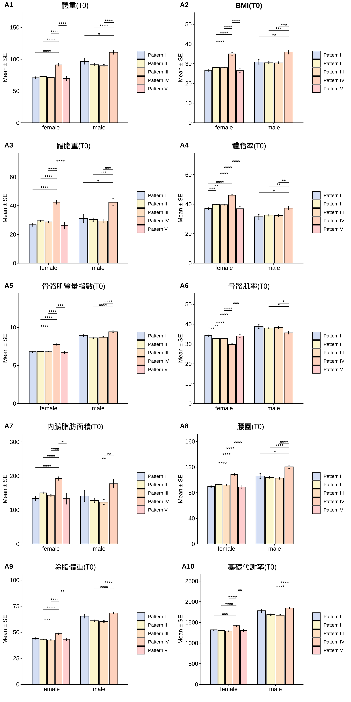
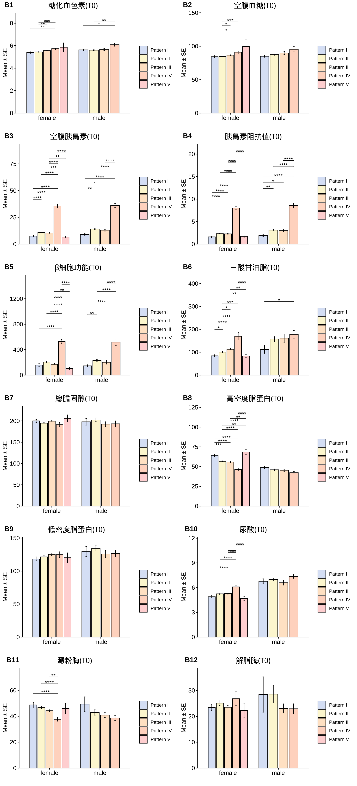
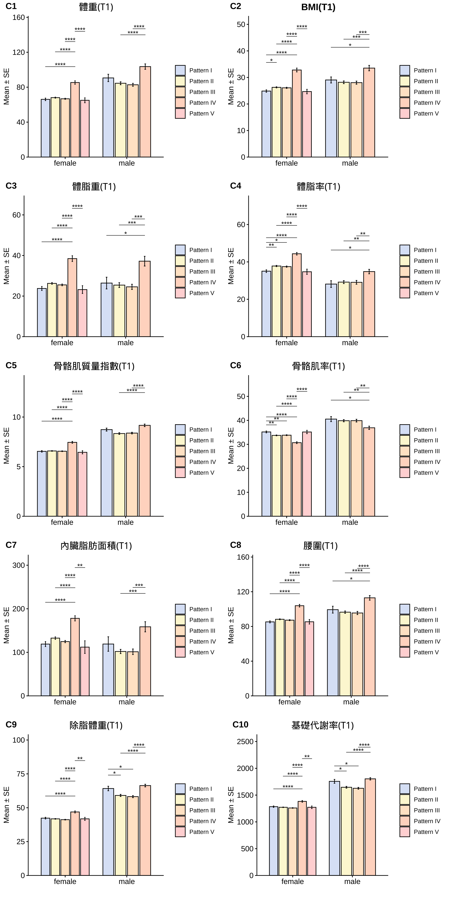
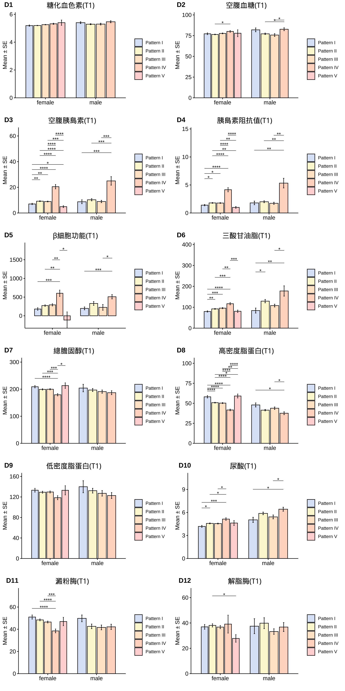
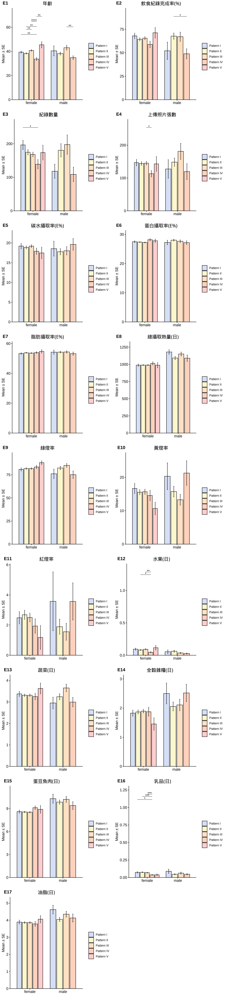
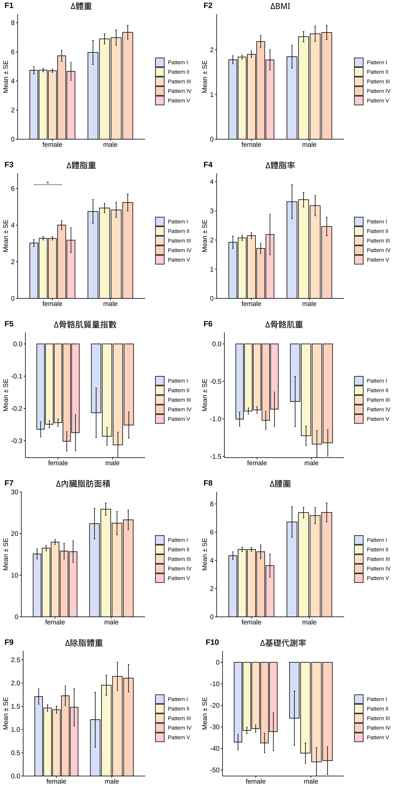
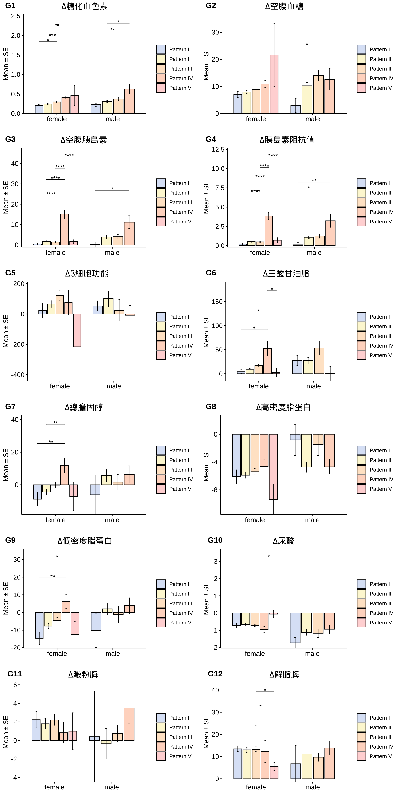
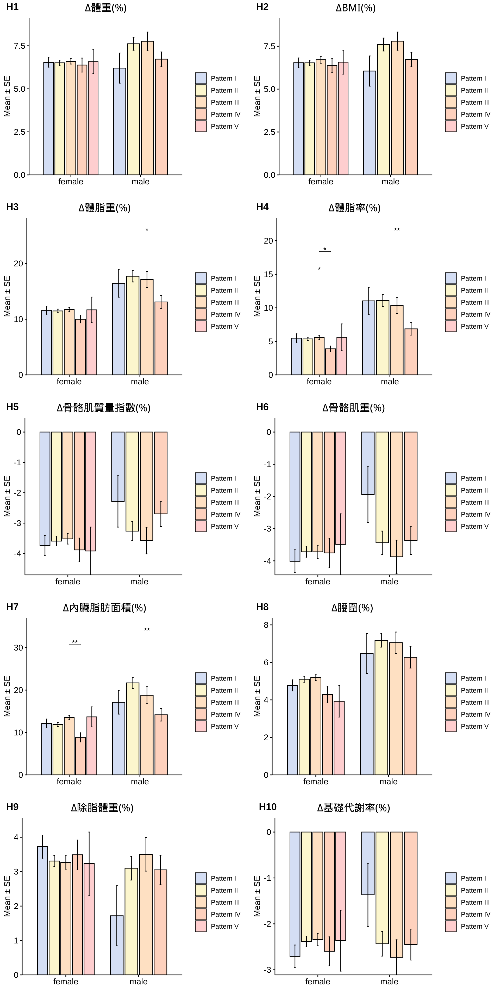

- Highlight
- 1 減重成效 - (單次療程)
- 2 Glucose Insulin Response Curve(GIRC)
- 3 Prediction(研究中)
- 4 Publication(1)
- 5 亞健康改善成效(2,4,6mo)
2.2 GIRC分析
DM x GIRC分佈(All)
| gender | . | Pattern I | Pattern II | Pattern III | Pattern IV | Pattern V | Sum |
|---|---|---|---|---|---|---|---|
| female | Normal | 223 (7.53%) | 677 (22.87%) | 379 (12.8%) | 48 (1.62%) | 38 (1.28%) | 1365 (46.11%) |
| Pre-DM | 42 (1.42%) | 215 (7.26%) | 419 (14.16%) | 73 (2.47%) | 12 (0.41%) | 761 (25.71%) | |
| DM | 19 (0.64%) | 44 (1.49%) | 203 (6.86%) | 64 (2.16%) | 111 (3.75%) | 441 (14.9%) | |
| Sum | 284 (9.59%) | 936 (31.62%) | 1001 (33.82%) | 185 (6.25%) | 161 (5.44%) | 2567 (86.72%) | |
| male | Normal | 22 (0.74%) | 77 (2.6%) | 30 (1.01%) | 13 (0.44%) | 2 (0.07%) | 144 (4.86%) |
| Pre-DM | 10 (0.34%) | 63 (2.13%) | 31 (1.05%) | 32 (1.08%) | 1 (0.03%) | 137 (4.63%) | |
| DM | 10 (0.34%) | 17 (0.57%) | 37 (1.25%) | 13 (0.44%) | 35 (1.18%) | 112 (3.78%) | |
| Sum | 42 (1.42%) | 157 (5.3%) | 98 (3.31%) | 58 (1.96%) | 38 (1.28%) | 393 (13.28%) | |
| Sum | Normal | 245 (8.28%) | 754 (25.47%) | 409 (13.82%) | 61 (2.06%) | 40 (1.35%) | 1509 (50.98%) |
| Pre-DM | 52 (1.76%) | 278 (9.39%) | 450 (15.2%) | 105 (3.55%) | 13 (0.44%) | 898 (30.34%) | |
| DM | 29 (0.98%) | 61 (2.06%) | 240 (8.11%) | 77 (2.6%) | 146 (4.93%) | 553 (18.68%) | |
| Sum | 326 (11.01%) | 1093 (36.93%) | 1099 (37.13%) | 243 (8.21%) | 199 (6.72%) | 2960 (100%) | |
| Note: Before intervention |
| Pattern.I | Pattern.II | Pattern.III | Pattern.IV | Pattern.V | Sum | |
|---|---|---|---|---|---|---|
| Normal | 245 (16.24%) | 754 (49.97%) | 409 (27.1%) | 61 (4.04%) | 40 (2.65%) | 1509 (100%) |
| Pre-DM | 52 (5.79%) | 278 (30.96%) | 450 (50.11%) | 105 (11.69%) | 13 (1.45%) | 898 (100%) |
| DM | 29 (5.24%) | 61 (11.03%) | 240 (43.4%) | 77 (13.92%) | 146 (26.4%) | 553 (100%) |
| Total | 326 | 1093 | 1099 | 243 | 199 | 2960 |
| Note: Before intervention |
| Pattern.I | Pattern.II | Pattern.III | Pattern.IV | Pattern.V | Total | |
|---|---|---|---|---|---|---|
| Normal | 245 (75.15%) | 754 (68.98%) | 409 (37.22%) | 61 (25.1%) | 40 (20.1%) | 1509 |
| Pre-DM | 52 (15.95%) | 278 (25.43%) | 450 (40.95%) | 105 (43.21%) | 13 (6.53%) | 898 |
| DM | 29 (8.9%) | 61 (5.58%) | 240 (21.84%) | 77 (31.69%) | 146 (73.37%) | 553 |
| Sum | 326 (100%) | 1093 (100%) | 1099 (100%) | 243 (100%) | 199 (100%) | 2960 |
|
Note: Before intervention *IR = The “insulin response” during an OGTT. |
DM x GIRC分佈(Obesity Program)
| gender | . | Pattern I | Pattern II | Pattern III | Pattern IV | Pattern V | Sum |
|---|---|---|---|---|---|---|---|
| female | Normal | 74 (6.86%) | 282 (26.16%) | 147 (13.64%) | 23 (2.13%) | 13 (1.21%) | 539 (50%) |
| Pre-DM | 13 (1.21%) | 78 (7.24%) | 169 (15.68%) | 30 (2.78%) | 4 (0.37%) | 294 (27.27%) | |
| DM | 3 (0.28%) | 12 (1.11%) | 41 (3.8%) | 11 (1.02%) | 3 (0.28%) | 70 (6.49%) | |
| Sum | 90 (8.35%) | 372 (34.51%) | 357 (33.12%) | 64 (5.94%) | 20 (1.86%) | 903 (83.77%) | |
| male | Normal | 7 (0.65%) | 38 (3.53%) | 18 (1.67%) | 6 (0.56%) | 1 (0.09%) | 70 (6.49%) |
| Pre-DM | 8 (0.74%) | 40 (3.71%) | 13 (1.21%) | 24 (2.23%) | 1 (0.09%) | 86 (7.98%) | |
| DM | 0 (0%) | 1 (0.09%) | 8 (0.74%) | 7 (0.65%) | 3 (0.28%) | 19 (1.76%) | |
| Sum | 15 (1.39%) | 79 (7.33%) | 39 (3.62%) | 37 (3.43%) | 5 (0.46%) | 175 (16.23%) | |
| Sum | Normal | 81 (7.51%) | 320 (29.68%) | 165 (15.31%) | 29 (2.69%) | 14 (1.3%) | 609 (56.49%) |
| Pre-DM | 21 (1.95%) | 118 (10.95%) | 182 (16.88%) | 54 (5.01%) | 5 (0.46%) | 380 (35.25%) | |
| DM | 3 (0.28%) | 13 (1.21%) | 49 (4.55%) | 18 (1.67%) | 6 (0.56%) | 89 (8.26%) | |
| Sum | 105 (9.74%) | 451 (41.84%) | 396 (36.73%) | 101 (9.37%) | 25 (2.32%) | 1078 (100%) | |
| Note: Before intervention |
| Pattern.I | Pattern.II | Pattern.III | Pattern.IV | Pattern.V | Sum | |
|---|---|---|---|---|---|---|
| Normal | 81 (13.3%) | 320 (52.55%) | 165 (27.09%) | 29 (4.76%) | 14 (2.3%) | 609 (100%) |
| Pre-DM | 21 (5.53%) | 118 (31.05%) | 182 (47.89%) | 54 (14.21%) | 5 (1.32%) | 380 (100%) |
| DM | 3 (3.37%) | 13 (14.61%) | 49 (55.06%) | 18 (20.22%) | 6 (6.74%) | 89 (100%) |
| Total | 105 | 451 | 396 | 101 | 25 | 1078 |
| Note: Before intervention |
| Pattern.I | Pattern.II | Pattern.III | Pattern.IV | Pattern.V | Total | |
|---|---|---|---|---|---|---|
| Normal | 81 (77.14%) | 320 (70.95%) | 165 (41.67%) | 29 (28.71%) | 14 (56%) | 609 |
| Pre-DM | 21 (20%) | 118 (26.16%) | 182 (45.96%) | 54 (53.47%) | 5 (20%) | 380 |
| DM | 3 (2.86%) | 13 (2.88%) | 49 (12.37%) | 18 (17.82%) | 6 (24%) | 89 |
| Sum | 105 (100%) | 451 (100%) | 396 (100%) | 101 (100%) | 25 (100%) | 1078 |
|
Note: Before intervention *IR = The “insulin response” during an OGTT. |
GIRC分層分析
初始狀態(Baseline)
Inbody

Blood

介入後狀態(Endpoint)
Inbody

Blood

飲食(Diet)

成效(Effectiveness)
成效(∆)-Inbody

成效(∆)-Blood

成效(%)-Inbody

成效(%)-Blood

| Pattern I | Pattern II | Pattern III | Pattern IV | Pattern V | Pattern I | Pattern II | Pattern III | Pattern IV | Pattern V | |
|---|---|---|---|---|---|---|---|---|---|---|
| 體重(T0) | 70.81 ± 1.61 | 72.78 ± 0.63 | 71.41 ± 0.65 | 91.08 ± 1.97 | 69.65 ± 3.16 | 96.57 ± 4.38 | 91.39 ± 1.7 | 89.73 ± 1.76 | 110.91 ± 3.11 | 90.6 ± 9.77 |
| BMI(T0) | 26.66 ± 0.51 | 28.11 ± 0.23 | 27.99 ± 0.24 | 34.99 ± 0.72 | 26.45 ± 0.97 | 30.9 ± 1.13 | 30.47 ± 0.52 | 30.4 ± 0.59 | 35.91 ± 1.05 | 29.91 ± 2.65 |
| 體脂重(T0) | 26.77 ± 1.05 | 29.53 ± 0.46 | 28.79 ± 0.46 | 42.46 ± 1.39 | 26.38 ± 2.2 | 31.16 ± 2.95 | 30.35 ± 1.16 | 29.38 ± 1.32 | 42.44 ± 2.46 | 27.3 ± 5.6 |
| 體脂率(T0) | 36.98 ± 0.65 | 39.87 ± 0.31 | 39.63 ± 0.32 | 46.07 ± 0.61 | 36.92 ± 1.47 | 31.45 ± 1.63 | 32.58 ± 0.69 | 32.26 ± 0.89 | 37.29 ± 1.14 | 28.96 ± 3.25 |
| 骨骼肌質量指數(T0) | 6.81 ± 0.09 | 6.83 ± 0.04 | 6.8 ± 0.04 | 7.75 ± 0.09 | 6.72 ± 0.18 | 8.95 ± 0.17 | 8.62 ± 0.09 | 8.69 ± 0.08 | 9.41 ± 0.12 | 8.9 ± 0.55 |
| 骨骼肌率(T0) | 34.24 ± 0.35 | 32.75 ± 0.17 | 32.82 ± 0.17 | 29.83 ± 0.33 | 34.07 ± 0.76 | 38.75 ± 0.97 | 38.1 ± 0.4 | 38.25 ± 0.52 | 35.62 ± 0.66 | 39.81 ± 1.86 |
| 內臟脂肪面積(T0) | 133.86 ± 5.03 | 150.22 ± 2.4 | 143.22 ± 2.35 | 192.42 ± 4.17 | 133.26 ± 12.59 | 141.42 ± 14.94 | 127.68 ± 4.74 | 122.98 ± 6.08 | 177.19 ± 9.08 | 118.54 ± 25.69 |
| 腰圍(T0) | 89.61 ± 1.25 | 93.04 ± 0.56 | 92.03 ± 0.58 | 108.52 ± 1.45 | 89.01 ± 2.9 | 106.08 ± 3.72 | 103.86 ± 1.32 | 102.69 ± 1.74 | 120.38 ± 2.54 | 99.22 ± 7.66 |
| 除脂體重(T0) | 44.04 ± 0.7 | 43.25 ± 0.26 | 42.62 ± 0.27 | 48.61 ± 0.77 | 43.27 ± 1.24 | 65.41 ± 1.86 | 61.04 ± 0.83 | 60.35 ± 0.82 | 68.48 ± 1.01 | 63.3 ± 4.7 |
| 基礎代謝率(T0) | 1321.32 ± 15.16 | 1304.24 ± 5.68 | 1290.68 ± 5.9 | 1420.19 ± 16.67 | 1304.7 ± 26.86 | 1782.8 ± 40.14 | 1688.39 ± 17.9 | 1673.59 ± 17.59 | 1849.08 ± 21.77 | 1737.8 ± 101.46 |
| 糖化血色素(T0) | 5.39 ± 0.07 | 5.44 ± 0.02 | 5.56 ± 0.02 | 5.73 ± 0.07 | 5.86 ± 0.39 | 5.63 ± 0.08 | 5.6 ± 0.04 | 5.67 ± 0.09 | 6.09 ± 0.14 | 7.44 ± 0.86 |
| 空腹血糖(T0) | 84.3 ± 1.59 | 84.39 ± 0.49 | 86.59 ± 0.6 | 91.03 ± 1.53 | 99.5 ± 11.04 | 85 ± 1.59 | 87.43 ± 0.98 | 89.82 ± 2.17 | 95.38 ± 3.95 | 135.6 ± 22.91 |
| 空腹胰島素(T0) | 7.46 ± 0.44 | 10.89 ± 0.28 | 10.38 ± 0.29 | 35.6 ± 1.58 | 6.58 ± 0.95 | 8.92 ± 1.19 | 14.13 ± 0.65 | 12.99 ± 0.84 | 36.06 ± 1.72 | 12 ± 1.64 |
| 胰島素阻抗值(T0) | 1.6 ± 0.12 | 2.31 ± 0.06 | 2.27 ± 0.07 | 8.01 ± 0.38 | 1.71 ± 0.32 | 1.91 ± 0.27 | 3.1 ± 0.15 | 2.98 ± 0.24 | 8.56 ± 0.57 | 4.06 ± 0.94 |
| β細胞功能(T0) | 157.47 ± 22.51 | 204.84 ± 9.5 | 169.71 ± 11.16 | 527.45 ± 33.66 | 103.64 ± 14.28 | 145.23 ± 17.58 | 231.4 ± 13.7 | 201.12 ± 29.22 | 517.95 ± 49.42 | 89.22 ± 24.66 |
| 三酸甘油脂(T0) | 84.19 ± 4.78 | 100.55 ± 2.62 | 112.67 ± 3.05 | 169.53 ± 16.5 | 83.5 ± 6.68 | 111.8 ± 17.12 | 157.27 ± 10.44 | 161.62 ± 18.02 | 178.11 ± 16.62 | 109.4 ± 13.14 |
| 總膽固醇(T0) | 200.11 ± 3.56 | 194.8 ± 1.86 | 199.47 ± 2.11 | 191.17 ± 4.98 | 206 ± 8.37 | 197.93 ± 7.81 | 202.46 ± 4.38 | 192.51 ± 5.53 | 193.3 ± 6.79 | 176 ± 12.01 |
| 高密度脂蛋白(T0) | 64.23 ± 1.69 | 56.65 ± 0.59 | 55.68 ± 0.69 | 46.32 ± 1.02 | 68.49 ± 3 | 48.78 ± 1.85 | 45.98 ± 1 | 45.37 ± 1.37 | 42.29 ± 1.61 | 41 ± 1.4 |
| 低密度脂蛋白(T0) | 118.46 ± 2.9 | 121.53 ± 1.64 | 125.26 ± 1.83 | 124.88 ± 4.35 | 120.3 ± 7.29 | 129.8 ± 7.45 | 134.36 ± 3.86 | 125.77 ± 5.44 | 126.65 ± 5.16 | 119.6 ± 13.52 |
| 尿酸(T0) | 4.9 ± 0.13 | 5.25 ± 0.07 | 5.27 ± 0.06 | 6.09 ± 0.13 | 4.68 ± 0.24 | 6.77 ± 0.3 | 7 ± 0.16 | 6.59 ± 0.3 | 7.36 ± 0.24 | 6 ± 0.39 |
| 澱粉脢(T0) | 48.74 ± 1.8 | 46.69 ± 0.82 | 44.29 ± 0.73 | 37.67 ± 1.51 | 45.95 ± 3.92 | 49.4 ± 5.58 | 42.92 ± 2.04 | 40.92 ± 1.83 | 38.68 ± 2.05 | 37 ± 5.32 |
| 解脂脢(T0) | 23.41 ± 1.24 | 25.09 ± 0.88 | 23.49 ± 0.61 | 26.81 ± 2.67 | 22.25 ± 2.58 | 28.43 ± 6.6 | 28.59 ± 3.41 | 23.05 ± 1.78 | 22.92 ± 1.93 | 29.8 ± 8.61 |
| 體重(T1) | 66.08 ± 1.45 | 68.03 ± 0.6 | 66.71 ± 0.62 | 85.35 ± 1.97 | 64.99 ± 2.83 | 90.61 ± 4.21 | 84.5 ± 1.67 | 82.75 ± 1.68 | 103.57 ± 3.08 | 87.48 ± 9 |
| BMI(T1) | 24.88 ± 0.45 | 26.27 ± 0.22 | 26.08 ± 0.22 | 32.8 ± 0.73 | 24.68 ± 0.85 | 29.05 ± 1.14 | 28.18 ± 0.52 | 28.04 ± 0.58 | 33.52 ± 1.02 | 28.9 ± 2.42 |
| 體脂重(T1) | 23.75 ± 0.98 | 26.25 ± 0.44 | 25.51 ± 0.44 | 38.46 ± 1.42 | 23.2 ± 1.92 | 26.41 ± 2.9 | 25.41 ± 1.19 | 24.55 ± 1.28 | 37.2 ± 2.39 | 24.34 ± 5.66 |
| 體脂率(T1) | 35.05 ± 0.71 | 37.8 ± 0.33 | 37.47 ± 0.34 | 44.36 ± 0.7 | 34.73 ± 1.4 | 28.14 ± 1.79 | 29.2 ± 0.8 | 29.08 ± 1.01 | 34.82 ± 1.2 | 26.58 ± 3.91 |
| 骨骼肌質量指數(T1) | 6.54 ± 0.08 | 6.58 ± 0.03 | 6.56 ± 0.04 | 7.45 ± 0.1 | 6.44 ± 0.16 | 8.73 ± 0.15 | 8.34 ± 0.09 | 8.38 ± 0.08 | 9.16 ± 0.13 | 8.8 ± 0.46 |
| 骨骼肌率(T1) | 35.17 ± 0.38 | 33.74 ± 0.18 | 33.82 ± 0.18 | 30.7 ± 0.38 | 35.15 ± 0.7 | 40.53 ± 1.05 | 39.86 ± 0.46 | 39.89 ± 0.57 | 36.91 ± 0.68 | 41.16 ± 2.23 |
| 內臟脂肪面積(T1) | 118.94 ± 4.89 | 132.63 ± 2.39 | 124.68 ± 2.32 | 178.01 ± 4.95 | 111.94 ± 12.2 | 119.02 ± 14.88 | 101.93 ± 4.41 | 101.3 ± 5.6 | 158.6 ± 9.38 | 105.94 ± 25.87 |
| 腰圍(T1) | 85.28 ± 1.18 | 88.27 ± 0.54 | 87.26 ± 0.57 | 103.91 ± 1.52 | 85.38 ± 2.64 | 99.36 ± 3.97 | 96.47 ± 1.36 | 95.52 ± 1.82 | 112.98 ± 2.68 | 95.14 ± 7.55 |
| 除脂體重(T1) | 42.33 ± 0.63 | 41.79 ± 0.25 | 41.2 ± 0.26 | 46.89 ± 0.75 | 41.79 ± 1.12 | 64.19 ± 1.67 | 59.09 ± 0.78 | 58.21 ± 0.78 | 66.37 ± 0.99 | 63.14 ± 4.37 |
| 基礎代謝率(T1) | 1284.29 ± 13.55 | 1272.58 ± 5.36 | 1259.89 ± 5.71 | 1382.73 ± 16.09 | 1272.5 ± 24.25 | 1756.87 ± 36.09 | 1646.23 ± 16.83 | 1627.36 ± 16.81 | 1803.46 ± 21.3 | 1733.8 ± 94.34 |
| 糖化血色素(T1) | 5.19 ± 0.05 | 5.2 ± 0.02 | 5.26 ± 0.02 | 5.32 ± 0.04 | 5.4 ± 0.19 | 5.4 ± 0.06 | 5.29 ± 0.04 | 5.3 ± 0.06 | 5.46 ± 0.07 | 6.2 ± 0.39 |
| 空腹血糖(T1) | 77.26 ± 1.07 | 76.44 ± 0.42 | 77.71 ± 0.52 | 80.09 ± 1.1 | 77.9 ± 4.16 | 82 ± 2.33 | 77.2 ± 0.86 | 75.74 ± 1.67 | 82.73 ± 1.76 | 91.8 ± 5.51 |
| 空腹胰島素(T1) | 7.04 ± 0.52 | 9.19 ± 0.35 | 8.94 ± 0.32 | 20.49 ± 1.7 | 4.94 ± 0.72 | 8.74 ± 1.49 | 10.3 ± 0.86 | 8.95 ± 0.91 | 24.99 ± 3.24 | 8.9 ± 1.76 |
| 胰島素阻抗值(T1) | 1.4 ± 0.12 | 1.8 ± 0.07 | 1.78 ± 0.07 | 4.15 ± 0.37 | 1 ± 0.17 | 1.8 ± 0.33 | 2.01 ± 0.17 | 1.73 ± 0.19 | 5.33 ± 0.86 | 2.08 ± 0.45 |
| β細胞功能(T1) | 181.42 ± 34.57 | 273.09 ± 21.17 | 292.71 ± 30.08 | 602.59 ± 85.55 | -113.21 ± 217.58 | 198.37 ± 38.93 | 329.71 ± 50.81 | 225.72 ± 76.8 | 510.14 ± 57.7 | 116.16 ± 25.83 |
| 三酸甘油脂(T1) | 79.79 ± 3 | 92.19 ± 2.26 | 95.84 ± 2.67 | 116.84 ± 5.44 | 80.9 ± 5.81 | 84.2 ± 11.95 | 129.22 ± 8.02 | 108.1 ± 6.77 | 177.89 ± 24.52 | 90.8 ± 20.03 |
| 總膽固醇(T1) | 208.93 ± 4.34 | 199.17 ± 2.34 | 199.7 ± 2.32 | 179.33 ± 4.31 | 213.15 ± 10.25 | 204.07 ± 13.76 | 196.86 ± 5.52 | 190.92 ± 5.89 | 186.97 ± 7.2 | 170 ± 13.66 |
| 高密度脂蛋白(T1) | 58.13 ± 1.51 | 50.8 ± 0.53 | 50.28 ± 0.64 | 41.69 ± 1.05 | 59.12 ± 2.49 | 47.97 ± 2.52 | 41.46 ± 0.9 | 43.87 ± 1.55 | 37.6 ± 1.78 | 41.02 ± 2.81 |
| 低密度脂蛋白(T1) | 133.14 ± 3.72 | 129.24 ± 1.98 | 129.68 ± 1.96 | 118.55 ± 3.95 | 132.95 ± 8.98 | 139.93 ± 11.72 | 132.23 ± 4.63 | 127.05 ± 5.36 | 122.76 ± 5.72 | 112.4 ± 7.36 |
| 尿酸(T1) | 4.18 ± 0.13 | 4.57 ± 0.06 | 4.55 ± 0.06 | 5.13 ± 0.17 | 4.62 ± 0.32 | 5.03 ± 0.34 | 5.87 ± 0.17 | 5.42 ± 0.25 | 6.42 ± 0.26 | 5.28 ± 0.29 |
| 澱粉脢(T1) | 50.99 ± 1.88 | 48.4 ± 0.86 | 46.5 ± 0.87 | 38.5 ± 1.74 | 46.95 ± 3.76 | 49.8 ± 3.05 | 42.59 ± 2.08 | 41.64 ± 2.16 | 42.16 ± 2.36 | 48 ± 10.89 |
| 解脂脢(T1) | 36.93 ± 1.89 | 38.1 ± 1.3 | 36.76 ± 1.27 | 39.11 ± 7.09 | 27.8 ± 2.98 | 37.47 ± 5.9 | 39.84 ± 4.29 | 33.24 ± 2.16 | 36.78 ± 3.52 | 37.6 ± 9.14 |
| 年齡 | 39.38 ± 0.78 | 38.32 ± 0.49 | 40.76 ± 0.6 | 33.67 ± 1.24 | 45.45 ± 2.52 | 40.47 ± 4.13 | 38.19 ± 1.17 | 43.03 ± 1.89 | 34.84 ± 1.45 | 42.8 ± 3.79 |
| 飲食紀錄完成率(%) | 67.99 ± 2.89 | 64.34 ± 1.51 | 65.51 ± 1.61 | 58.89 ± 3.51 | 71.28 ± 5.62 | 52.08 ± 9.23 | 67.72 ± 3.22 | 67.08 ± 4.86 | 48.9 ± 5.34 | 50.17 ± 8.75 |
| 紀錄數量 | 196.56 ± 13.77 | 174.79 ± 7.87 | 168.23 ± 6.82 | 139 ± 13.9 | 173.7 ± 22.14 | 118 ± 21.18 | 180.53 ± 19.68 | 197.56 ± 28.72 | 108.68 ± 21.53 | 78.8 ± 18.21 |
| 上傳照片張數 | 146.69 ± 9.73 | 144.1 ± 5.54 | 145.05 ± 5.5 | 113.06 ± 9.69 | 142.9 ± 22.68 | 127.4 ± 28.15 | 148.23 ± 12.4 | 181.23 ± 24.27 | 119.49 ± 24.24 | 104.6 ± 34.34 |
| 碳水攝取率(E%) | 19.2 ± 0.66 | 18.85 ± 0.37 | 19.19 ± 0.35 | 17.9 ± 0.77 | 17.46 ± 1.45 | 18.55 ± 1.87 | 17.77 ± 0.76 | 18.01 ± 1.03 | 19.63 ± 1.46 | 22.03 ± 3.68 |
| 蛋白攝取率(E%) | 27.49 ± 0.3 | 27.37 ± 0.15 | 27.23 ± 0.15 | 28.18 ± 0.37 | 27.82 ± 0.56 | 27.24 ± 0.74 | 28.02 ± 0.3 | 27.65 ± 0.45 | 27.17 ± 0.61 | 27.82 ± 1.82 |
| 脂肪攝取率(E%) | 53.31 ± 0.51 | 53.78 ± 0.28 | 53.58 ± 0.26 | 53.91 ± 0.59 | 54.72 ± 1.11 | 54.21 ± 1.39 | 54.21 ± 0.57 | 54.34 ± 0.74 | 53.2 ± 1.06 | 50.16 ± 2.16 |
| 總攝取熱量(日) | 988.14 ± 16.76 | 989.25 ± 8.49 | 989.37 ± 7.67 | 1014.02 ± 22.02 | 988.13 ± 38.42 | 1180.2 ± 32.8 | 1092.39 ± 23.94 | 1151.09 ± 28.42 | 1090.3 ± 46.65 | 1099.06 ± 34.33 |
| 綠燈率 | 80.84 ± 1.6 | 81.76 ± 0.86 | 81.8 ± 0.85 | 83.49 ± 1.74 | 88.15 ± 1.96 | 76.1 ± 5.02 | 82.37 ± 1.76 | 85.16 ± 1.94 | 75.15 ± 4.01 | 86.43 ± 3.61 |
| 黃燈率 | 16.67 ± 1.51 | 15.55 ± 0.75 | 15.69 ± 0.76 | 14.57 ± 1.54 | 10.67 ± 1.88 | 20.32 ± 3.99 | 15.74 ± 1.57 | 13.28 ± 1.6 | 21.28 ± 3.66 | 12.69 ± 3.8 |
| 紅燈率 | 2.48 ± 0.4 | 2.68 ± 0.3 | 2.51 ± 0.29 | 1.94 ± 0.47 | 1.18 ± 0.79 | 3.58 ± 1.95 | 1.89 ± 0.49 | 1.56 ± 0.56 | 3.57 ± 1.23 | 0.88 ± 0.88 |
| 水果(日) | 0.09 ± 0.02 | 0.08 ± 0.01 | 0.09 ± 0.01 | 0.05 ± 0.01 | 0.12 ± 0.04 | 0.05 ± 0.03 | 0.06 ± 0.01 | 0.04 ± 0.01 | 0.03 ± 0.01 | 0.24 ± 0.21 |
| 蔬菜(日) | 3.37 ± 0.12 | 3.31 ± 0.05 | 3.31 ± 0.06 | 3.25 ± 0.15 | 3.63 ± 0.25 | 2.95 ± 0.27 | 3.24 ± 0.14 | 3.65 ± 0.17 | 2.99 ± 0.22 | 3.29 ± 0.52 |
| 全穀雜糧(日) | 1.83 ± 0.1 | 1.87 ± 0.07 | 1.89 ± 0.06 | 1.87 ± 0.15 | 1.45 ± 0.21 | 2.5 ± 0.36 | 2.06 ± 0.15 | 2.11 ± 0.2 | 2.52 ± 0.3 | 2.65 ± 0.69 |
| 蛋豆魚肉(日) | 8.61 ± 0.19 | 8.56 ± 0.09 | 8.53 ± 0.09 | 9.12 ± 0.23 | 8.9 ± 0.5 | 10.3 ± 0.59 | 9.85 ± 0.27 | 10.21 ± 0.38 | 9.4 ± 0.5 | 9.71 ± 1.01 |
| 乳品(日) | 0.07 ± 0.01 | 0.07 ± 0.01 | 0.07 ± 0.01 | 0.04 ± 0.01 | 0.04 ± 0.01 | 0.09 ± 0.03 | 0.05 ± 0.01 | 0.06 ± 0.01 | 0.05 ± 0.01 | 0.02 ± 0.02 |
| 油脂(日) | 3.89 ± 0.11 | 3.86 ± 0.05 | 3.86 ± 0.05 | 3.78 ± 0.14 | 4.06 ± 0.21 | 4.62 ± 0.25 | 4.05 ± 0.11 | 4.35 ± 0.16 | 4.13 ± 0.23 | 3.42 ± 0.26 |
| ∆體重 | 4.73 ± 0.25 | 4.75 ± 0.12 | 4.7 ± 0.12 | 5.73 ± 0.38 | 4.66 ± 0.62 | 5.96 ± 0.83 | 6.89 ± 0.34 | 6.97 ± 0.52 | 7.34 ± 0.47 | 3.12 ± 1.27 |
| ∆BMI | 1.78 ± 0.09 | 1.84 ± 0.05 | 1.9 ± 0.08 | 2.18 ± 0.14 | 1.77 ± 0.23 | 1.85 ± 0.25 | 2.29 ± 0.12 | 2.36 ± 0.17 | 2.39 ± 0.16 | 1.02 ± 0.41 |
| ∆體脂重 | 3.02 ± 0.19 | 3.28 ± 0.09 | 3.28 ± 0.09 | 4 ± 0.25 | 3.18 ± 0.68 | 4.75 ± 0.65 | 4.94 ± 0.25 | 4.83 ± 0.41 | 5.24 ± 0.46 | 2.96 ± 0.92 |
| ∆體脂率 | 1.92 ± 0.21 | 2.07 ± 0.09 | 2.15 ± 0.1 | 1.71 ± 0.18 | 2.19 ± 0.7 | 3.31 ± 0.58 | 3.38 ± 0.25 | 3.18 ± 0.35 | 2.46 ± 0.32 | 2.38 ± 0.83 |
| ∆骨骼肌質量指數 | -0.26 ± 0.02 | -0.25 ± 0.01 | -0.24 ± 0.01 | -0.3 ± 0.03 | -0.27 ± 0.06 | -0.21 ± 0.08 | -0.29 ± 0.03 | -0.31 ± 0.04 | -0.25 ± 0.04 | -0.1 ± 0.15 |
| ∆骨骼肌重 | -1 ± 0.09 | -0.89 ± 0.04 | -0.88 ± 0.05 | -1.02 ± 0.12 | -0.87 ± 0.23 | -0.77 ± 0.33 | -1.22 ± 0.13 | -1.34 ± 0.18 | -1.32 ± 0.18 | -0.08 ± 0.52 |
| ∆內臟脂肪面積 | 15.11 ± 1.04 | 16.5 ± 0.51 | 17.96 ± 0.5 | 15.8 ± 1.53 | 15.66 ± 2.01 | 22.39 ± 3.28 | 25.87 ± 1.25 | 22.51 ± 2.32 | 23.3 ± 1.77 | 12.6 ± 3.24 |
| ∆腰圍 | 4.33 ± 0.28 | 4.78 ± 0.15 | 4.77 ± 0.14 | 4.61 ± 0.49 | 3.63 ± 0.82 | 6.72 ± 1.08 | 7.38 ± 0.37 | 7.17 ± 0.57 | 7.39 ± 0.66 | 4.08 ± 1.03 |
| ∆除脂體重 | 1.71 ± 0.17 | 1.46 ± 0.07 | 1.43 ± 0.08 | 1.73 ± 0.21 | 1.48 ± 0.41 | 1.21 ± 0.59 | 1.95 ± 0.22 | 2.14 ± 0.3 | 2.11 ± 0.3 | 0.16 ± 0.91 |
| ∆基礎代謝率 | -37.03 ± 3.58 | -31.65 ± 1.54 | -30.79 ± 1.71 | -37.45 ± 4.54 | -32.2 ± 8.82 | -25.93 ± 12.6 | -42.16 ± 4.7 | -46.23 ± 6.57 | -45.62 ± 6.41 | -4 ± 19.77 |
| ∆糖化血色素 | 0.2 ± 0.03 | 0.25 ± 0.01 | 0.3 ± 0.02 | 0.41 ± 0.04 | 0.46 ± 0.26 | 0.23 ± 0.04 | 0.31 ± 0.02 | 0.37 ± 0.05 | 0.63 ± 0.11 | 1.24 ± 0.51 |
| ∆空腹血糖 | 7.04 ± 1.05 | 7.96 ± 0.52 | 8.88 ± 0.61 | 10.94 ± 1.3 | 21.6 ± 11.72 | 3 ± 2.65 | 10.23 ± 1.16 | 14.08 ± 2.02 | 12.65 ± 3.98 | 43.8 ± 18.02 |
| ∆空腹胰島素 | 0.45 ± 0.48 | 1.7 ± 0.34 | 1.44 ± 0.29 | 15.11 ± 2.06 | 1.64 ± 0.91 | 0.18 ± 1.28 | 3.83 ± 0.79 | 4.04 ± 1.06 | 11.18 ± 3.13 | 3.1 ± 2.08 |
| ∆胰島素阻抗值 | 0.2 ± 0.1 | 0.51 ± 0.08 | 0.49 ± 0.07 | 3.86 ± 0.45 | 0.71 ± 0.31 | 0.11 ± 0.31 | 1.08 ± 0.18 | 1.25 ± 0.26 | 3.23 ± 0.85 | 1.98 ± 0.88 |
| ∆β細胞功能 | 23.76 ± 47.32 | 65.98 ± 21.19 | 122.43 ± 30.68 | 75.13 ± 79.13 | -216.84 ± 223.82 | 53.14 ± 33.77 | 100.97 ± 50.46 | 24.61 ± 71.11 | -7.81 ± 63.68 | 26.94 ± 30.81 |
| ∆三酸甘油脂 | 4.4 ± 3.81 | 8.26 ± 2.45 | 16.83 ± 2.66 | 52.69 ± 14.89 | 2.6 ± 8.93 | 27.6 ± 10.71 | 27.18 ± 6.63 | 53.51 ± 14.36 | 0.22 ± 14.94 | 18.6 ± 23.17 |
| ∆總膽固醇 | -8.82 ± 4.1 | -4.4 ± 1.69 | -0.23 ± 1.71 | 11.84 ± 4.4 | -7.15 ± 8.73 | -6.13 ± 12.14 | 5.62 ± 3.97 | 1.59 ± 4.78 | 6.32 ± 5.3 | 6 ± 13.24 |
| ∆高密度脂蛋白 | -6.11 ± 0.99 | -5.89 ± 0.44 | -5.4 ± 0.44 | -4.64 ± 0.94 | -9.37 ± 2.2 | -0.81 ± 2.25 | -4.73 ± 0.73 | -1.51 ± 1.52 | -4.69 ± 1.02 | 0.02 ± 2.82 |
| ∆低密度脂蛋白 | -14.69 ± 3.53 | -7.72 ± 1.44 | -4.41 ± 1.51 | 6.33 ± 3.98 | -12.65 ± 7.62 | -10.13 ± 9.74 | 2.04 ± 3.38 | -1.28 ± 4.63 | 3.89 ± 4.42 | 7.2 ± 8.93 |
| ∆尿酸 | -0.72 ± 0.11 | -0.68 ± 0.06 | -0.71 ± 0.06 | -0.97 ± 0.18 | -0.06 ± 0.21 | -1.73 ± 0.31 | -1.13 ± 0.16 | -1.18 ± 0.25 | -0.94 ± 0.24 | -0.72 ± 0.56 |
| ∆澱粉脢 | 2.24 ± 0.89 | 1.79 ± 0.55 | 2.22 ± 0.57 | 0.83 ± 1.1 | 1 ± 1.98 | 0.4 ± 4.87 | -0.35 ± 1.64 | 0.72 ± 0.89 | 3.49 ± 1.63 | 11 ± 9.47 |
| ∆解脂脢 | 13.52 ± 1.3 | 13.05 ± 1.12 | 13.27 ± 1.09 | 12.3 ± 4.91 | 5.55 ± 1.9 | 6.79 ± 7.89 | 11.21 ± 4.03 | 9.79 ± 1.87 | 13.86 ± 3.14 | 7.8 ± 13 |
| ∆體重(%) | 6.54 ± 0.28 | 6.51 ± 0.15 | 6.6 ± 0.15 | 6.38 ± 0.41 | 6.58 ± 0.7 | 6.21 ± 0.88 | 7.62 ± 0.38 | 7.77 ± 0.53 | 6.73 ± 0.42 | 3.15 ± 1.46 |
| ∆BMI(%) | 6.54 ± 0.28 | 6.53 ± 0.15 | 6.71 ± 0.2 | 6.39 ± 0.41 | 6.57 ± 0.7 | 6.05 ± 0.88 | 7.6 ± 0.38 | 7.79 ± 0.53 | 6.72 ± 0.42 | 3.15 ± 1.46 |
| ∆體脂重(%) | 11.6 ± 0.74 | 11.48 ± 0.32 | 11.75 ± 0.34 | 9.98 ± 0.64 | 11.68 ± 2.3 | 16.42 ± 2.47 | 17.72 ± 1.04 | 17.13 ± 1.43 | 13.09 ± 1.13 | 12.49 ± 3.71 |
| ∆體脂率(%) | 5.48 ± 0.65 | 5.37 ± 0.25 | 5.57 ± 0.28 | 3.89 ± 0.42 | 5.6 ± 2 | 11.04 ± 2.02 | 11.09 ± 0.89 | 10.33 ± 1.18 | 6.86 ± 0.93 | 9.61 ± 3.53 |
| ∆骨骼肌質量指數(%) | -3.74 ± 0.33 | -3.59 ± 0.16 | -3.52 ± 0.17 | -3.88 ± 0.39 | -3.92 ± 0.79 | -2.29 ± 0.85 | -3.26 ± 0.31 | -3.58 ± 0.44 | -2.7 ± 0.42 | -0.85 ± 1.84 |
| ∆骨骼肌重(%) | -4.01 ± 0.36 | -3.72 ± 0.17 | -3.72 ± 0.21 | -3.75 ± 0.45 | -3.49 ± 0.95 | -1.94 ± 0.88 | -3.44 ± 0.36 | -3.87 ± 0.52 | -3.36 ± 0.44 | -0.02 ± 1.68 |
| ∆內臟脂肪面積(%) | 12.16 ± 0.87 | 11.91 ± 0.39 | 13.55 ± 0.42 | 8.86 ± 0.88 | 13.68 ± 1.83 | 17.13 ± 2.5 | 21.69 ± 1.13 | 18.78 ± 1.67 | 14.18 ± 1.11 | 12.84 ± 4.2 |
| ∆腰圍(%) | 4.77 ± 0.3 | 5.1 ± 0.16 | 5.19 ± 0.15 | 4.28 ± 0.44 | 3.93 ± 0.84 | 6.47 ± 1.07 | 7.18 ± 0.36 | 7.05 ± 0.57 | 6.27 ± 0.57 | 4.16 ± 1.07 |
| ∆除脂體重(%) | 3.73 ± 0.34 | 3.31 ± 0.16 | 3.27 ± 0.2 | 3.49 ± 0.43 | 3.23 ± 0.92 | 1.72 ± 0.87 | 3.1 ± 0.34 | 3.5 ± 0.49 | 3.05 ± 0.42 | 0.04 ± 1.64 |
| ∆基礎代謝率(%) | -2.71 ± 0.25 | -2.38 ± 0.11 | -2.34 ± 0.14 | -2.6 ± 0.32 | -2.37 ± 0.66 | -1.37 ± 0.69 | -2.43 ± 0.27 | -2.73 ± 0.38 | -2.45 ± 0.34 | -0.1 ± 1.25 |
| ∆糖化血色素(%) | 3.46 ± 0.43 | 4.34 ± 0.22 | 5.21 ± 0.23 | 6.88 ± 0.58 | 5.48 ± 2.23 | 3.96 ± 0.65 | 5.41 ± 0.43 | 6.34 ± 0.7 | 9.41 ± 1.35 | 14.5 ± 4.87 |
| ∆空腹血糖(%) | 7.54 ± 0.99 | 8.78 ± 0.56 | 9.44 ± 0.66 | 11.27 ± 1.25 | 13.88 ± 4.71 | 3.15 ± 2.96 | 11.04 ± 1.24 | 14.51 ± 2.19 | 10.51 ± 2.49 | 26.96 ± 8.24 |
| ∆空腹胰島素(%) | -7.13 ± 8.22 | 5.33 ± 3.3 | 2.94 ± 3.51 | 40.03 ± 5 | 9.68 ± 12.08 | -9.15 ± 14.99 | 24.49 ± 5.27 | 13.42 ± 17.19 | 30.03 ± 7.93 | 21.91 ± 20.54 |
| ∆胰島素阻抗值(%) | -2.73 ± 8.75 | 10.83 ± 3.35 | 8.29 ± 4.04 | 45.83 ± 4.74 | 17.51 ± 12.25 | -9.38 ± 17.7 | 30.58 ± 5.39 | 18.75 ± 19.81 | 35.32 ± 8.44 | 44.81 ± 13.94 |
| ∆β細胞功能(%) | 57.91 ± 26.14 | 61.09 ± 17.01 | 73.79 ± 15.03 | 19.36 ± 13.91 | -107.36 ± 126.64 | 38.38 ± 19.69 | 70.15 ± 32.2 | 1.4 ± 33.02 | 17.11 ± 14.62 | 85.43 ± 54.84 |
| ∆三酸甘油脂(%) | -7.92 ± 4.47 | -2.15 ± 2.16 | 6.07 ± 1.99 | 20.01 ± 3.8 | -10.64 ± 15.62 | 15.53 ± 9.05 | 8.78 ± 4.05 | 21.46 ± 4.48 | -0.67 ± 6.16 | 13.72 ± 20.19 |
| ∆總膽固醇(%) | -5.46 ± 2 | -2.79 ± 0.86 | -0.93 ± 0.87 | 4.76 ± 1.87 | -4.44 ± 4.15 | -3.34 ± 5.95 | 2.52 ± 1.89 | -0.03 ± 2.6 | 2.39 ± 2.73 | 2.45 ± 7.87 |
| ∆高密度脂蛋白(%) | -8.45 ± 1.48 | -9.29 ± 0.74 | -8.7 ± 0.76 | -9.03 ± 1.85 | -12.75 ± 2.87 | -1.07 ± 4.37 | -9.29 ± 1.51 | -1.89 ± 3.36 | -10.73 ± 2.19 | 0.27 ± 6.78 |
| ∆低密度脂蛋白(%) | -14.68 ± 2.98 | -8.02 ± 1.24 | -5.63 ± 1.27 | 2.58 ± 2.55 | -13.06 ± 6.54 | -8.4 ± 6.94 | 0.74 ± 2.62 | -4.32 ± 4.9 | 1.64 ± 3.93 | 3.18 ± 7.92 |
| ∆尿酸(%) | -13.36 ± 2.18 | -10.87 ± 1.15 | -11.99 ± 1.16 | -14.49 ± 2.96 | -1.23 ± 4.2 | -24.99 ± 4.04 | -14.66 ± 2.34 | -14.96 ± 3.6 | -11.88 ± 2.98 | -10.19 ± 8.24 |
| ∆澱粉脢(%) | 6.54 ± 1.82 | 5.48 ± 1.04 | 6.18 ± 1.25 | 3.16 ± 2.48 | 4.36 ± 4.02 | 10.96 ± 11.41 | 1.96 ± 2.53 | 1.6 ± 2.05 | 11.36 ± 4.66 | 30.14 ± 23.31 |
| ∆解脂脢(%) | 67.58 ± 6.35 | 66.51 ± 4.04 | 69.09 ± 5.05 | 47.84 ± 7.35 | 33.87 ± 10.97 | 72.47 ± 25.8 | 58.26 ± 8.49 | 57.31 ± 11.88 | 85.16 ± 21.21 | 87.17 ± 93.87 |
|
Significance: |
Pattern改善分析
| Pattern.I | Pattern.II | Pattern.III | Pattern.IV | Pattern.V | Sum | |
|---|---|---|---|---|---|---|
| Pattern I | 30 (50.85%) | 21 (35.59%) | 4 (6.78%) | 1 (1.69%) | 3 (5.08%) | 59 (100%) |
| Pattern II | 60 (26.55%) | 121 (53.54%) | 32 (14.16%) | 11 (4.87%) | 2 (0.88%) | 226 (100%) |
| Pattern III | 23 (18.4%) | 62 (49.6%) | 36 (28.8%) | 3 (2.4%) | 1 (0.8%) | 125 (100%) |
| Pattern IV | 3 (7.14%) | 21 (50%) | 4 (9.52%) | 14 (33.33%) | 0 (0%) | 42 (100%) |
| Pattern V | 4 (40%) | 4 (40%) | 2 (20%) | 0 (0%) | 0 (0%) | 10 (100%) |
| Total | 120 | 229 | 78 | 29 | 6 | 462 |
|
Note: · Row= Pre-intervention Insulin Response Pattern during an OGTT. · Column= Post-intervention Insulin Response Pattern during an OGTT. |